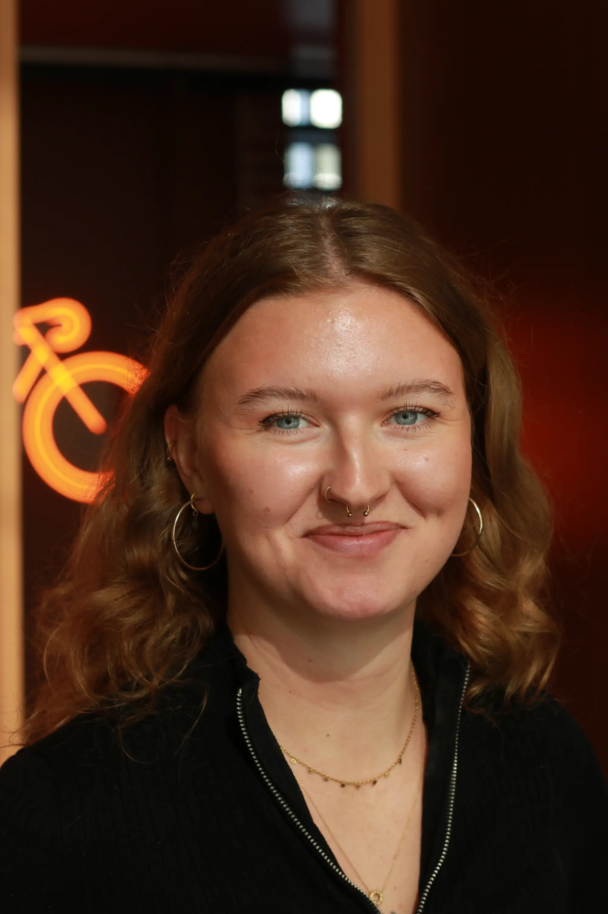

Software | Problem Solver | Creator
I'm a software development student with a diverse background in service, leadership, and production. I'm passionate about creating digital solutions that are smart, precise, and user-friendly.
Experiences that shaped me:
- Production & Craft Background - Hands-on experience in craft beer production, combining precision, technical skill and teamwork
- Service Background - Extensive work in restaurants, bars, and reception, honing flexibility, multitasking, and customer-focused problem-solving
- International Experience - Fine dining in Melbourne and sports entertainment in Mallroca, developing creativity, adaptability and cross-cultural problem-solving
- Military Background - Led a group during military service and later served as an instructor, training the next cohort and strengthening leadership and decision-making under pressure